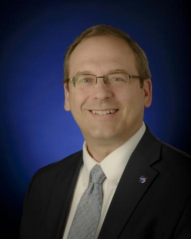
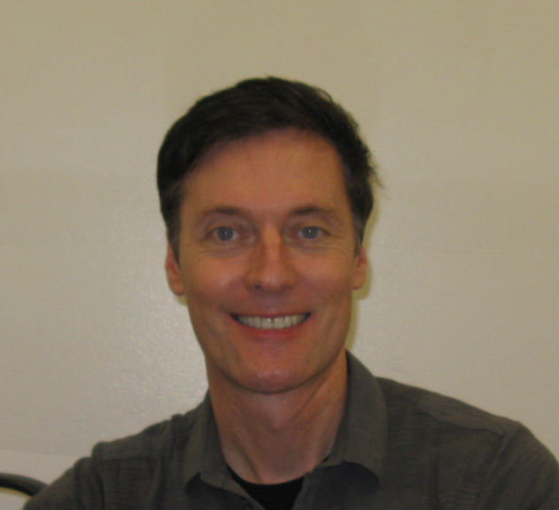

ISSC 2021
Keynote Speakers
Craig Kundrot

Dr. Craig Kundrot is the Biological and Physical Sciences Division Director in the Science Mission Directorate at NASA Headquarters. He is responsible for providing strategic direction for the division and overseeing the planning and execution of its two-pronged mission of pioneering scientific discovery and enabling human spaceflight exploration.
The Division’s research is focused on using attributes of the spaceflight environment, such as altered gravity and space radiation, as experimental tools to study biological and physical systems in ways not possible on Earth. The Space Biology research ranges from microbes to plants and animals to the ecosystem within spacecraft. Physical Sciences research includes fluid physics, combustions, materials science, biophysics, condensed matter physics, and quantum physics. The weightless environment of the International Space Station is the most common research platform used in the programs, but many other platforms on the ground, in atmospheric flight, sub-orbital flight and orbital flight, are also used. The results of the research provide benefits back to our lives on Earth and help enable sustainable human exploration of space.
Prior to the establishment of the Biological and Physical Sciences Division in the Science Mission Directorate in 2020, Dr. Kundrot was the Director of the Space Life and Physical Sciences Research and Applications (SLPSRA) Division in NASA’s Human Exploration and Operations Missions Directorate.
Dr. Kundrot has a BA from Northwestern University in Integrated Science and a MPhil and PhD from Yale University in Molecular Biophysics and Biochemistry. After a post-doctoral fellowship at the Laboratory for Molecular Biology in Cambridge, England, he held a faculty position at the University of Colorado studying protein and RNA structure-function relationships using x-crystallography. He then joined NASA’s biotechnology program in 1998 at Marshall Space Flight Center serving as a project scientist and then principal investigator for a competitively awarded flight project. Dr. Kundrot subsequently assumed science management positions for biotechnology and materials science.
He moved to the Human Research Program at NASA’s Johnson Space Center in 2006, where he served as the Deputy Chief Scientist and as the first Mission Scientist for the HRP’s Twins Study. He also served as Chair of the Institutional Review Board at NASA Johnson Space Center, helping to formulate NASA’s genetic research policy for astronauts. In 2015, Dr. Kundrot became the Life Sciences Lead in the Office of the Chief Scientist at NASA Headquarters to coordinate life science research capability in astrobiology, human research, planetary protection, and space biology within NASA. Dr. Kundrot became the SLPSRA Director in the Human Exploration and Operations Mission Directorate in 2016. He has authored numerous scientific papers and earned several NASA awards for science and management.
Dr. Kundrot was born in Illinois and is married with two children.
Richard Quinn

Dr. Richard Quinn is a Research Scientist working in the Exobiology Branch at NASA Ames Research Center. His work focuses on biomarker preservation and detection in planetary and space environments. He has over 20 years of experience developing instruments and technologies for planetary exploration, including the adaptation of CubeSat technologies for future NASA life detection missions.